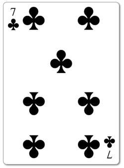

We have seen many layout methods come and go for CSS. All of them
have had their shortcomings. Picking a layout method has often felt
like picking the lesser of many evils with CSS! The good news is
that things are improving. Two recent additions to CSS are Flexbox
and CSS Grid. CSS grid is
just ready for widespread use, provides a nice complement to
flexbox. Both together solve many long standing problems with other layout
methods.
Flexbox is ideally suited for layouts that flow either horizontally
or vertically (which happens a lot with the current trends) and can
simplify responsive design with the ease at which it can switch
between those two flows.
CSS Grid excels with two dimensional layouts...where both the X and
the Y position of an element are critical.
In this activity we will be
creating a playing card front using CSS Grid. We are going to start with the 7
of Clubs. (Actually...you could make a 7 of anything if you wanted.
I once even made a
Seven of foxes
:) )
Tips and Guidelines
Many versions of the 7 of clubs (and other cards) will have a kind
of half row where the center pip is wedged in between 2 other rows.
Don't worry about re-creating that. Go ahead and give each row of
pips on the card a full row in your layout.
Along those lines...don't stress about making your html card look
exactly like whatever 7 of clubs you are looking at. As
long as it looks good, is balanced, and has all the elements you
will get credit.
You can use either a css shape or svg for your suits. If you want to
use svg I have an example file with the
svg suit shapes
in it to start with. If you haven't completed the module on Shapes or SVG you could always find an image to use for the pips as well.
A playing card is a good example of a
grid based layout. In such layouts everything should fit in one or more defined
columns. Sometimes in such layouts columns need to be skipped. In
grid terminology a skip is called an offset.
Using CSS Grid
Create (or Fork) a pen
Create a new pen in codepen.io (or if you would rather you can
fork
this starter card pen
and use it as a starting point). Make sure to change the css
settings to use SCSS so you can take advantage of Sass. You should
be able to use some of the classes you created for the Card Back
assignment to create the general shape of the card. Continue by
adding all the elements you will need next.
For example we are making the 7 of clubs which looks something
like this:

I would need a number 7 and small suit, then 7 regular sized
suits, then another 7 and small suit. Notice that some of those
icons are upside down! Try this class to make that happen:
.rotate {
transform: rotate(180deg);
}
Create a Grid based layout for the Card
Create a CSS Grid based layout for your card. Your grid will work
best if all of the pips on the card share a common parent. Grid is
similar to Flexbox in that when you turn on grid for an
element...it only effects the immediate children of that element.
Condensing the resources above on Grid gives us the following
simplified list of steps: (This list is NOT a replacement for
reviewing the resources above!)
Review your desired layout. Visualize (or just print and draw)
the grid lines for the layout to determine the number and
widths of columns and rows.
Identify the elements you need to position in your HTML (Grid
items or children)
Make sure they have a common parent...identify this. (Grid
container or parent)
Turn on grid for that element (display: grid)
Define your columns.
Place the Grid items in your grid.
Adjust grid columns as necessary
Define specific Grid rows as necessary.
Add Grid Gap as necessary.
Adjust alignment as necessary.
Grading
Card looks like a 7 of Clubs (or like a 7 of something).